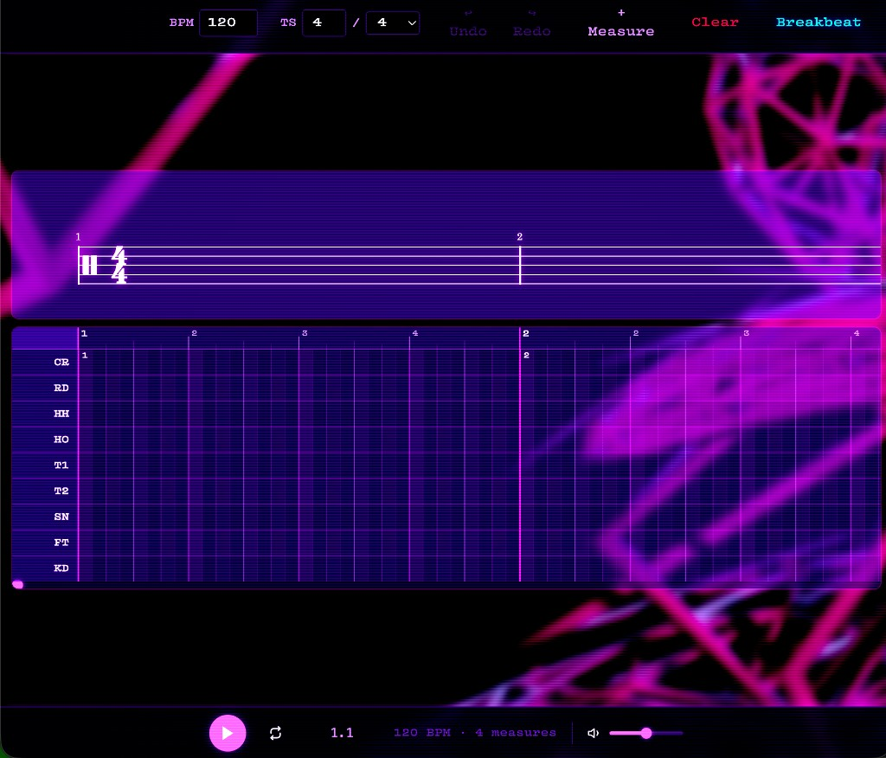

breakComposer

A browser-based composition tool for creating drum beats that converts a traditional piano roll into sheet music notation. Click the image to open breakComposer in a new tab. (Mobile users should rotate their device to landscape mode for the best experience.) Built with React, VexFlow, and Tone.js.
Reddit Media Collage
I originally built this as the engine behind the living photo collage on the first page of this site (the homepage pulls from a Reddit profile and layers images and video with randomized timing and overlap). The full app here is the same “version 2” collage edition I run locally when I want every control: search any user or profile URL, play/pause, min/max speed between new tiles, media size, grid view, and fullscreen.
Open it in a new tab to try the interface yourself. Because Reddit blocks anonymous browser requests, the collage needs a tiny Node/Express proxy (included in the repo) for /api/lookup — same setup as the homepage. From the redditThing repo run node server.js: the collage is also served at http://localhost:3000/projects/reddit-media-collage/index.html (same host as the API, so no extra config). You can use another port (e.g. 3001) the same way. If you only host static files (e.g. GitHub Pages), set window.REDDIT_SLIDESHOW_API_BASE in projects/reddit-media-collage/index.html to your deployed API origin.
Open Reddit Media Collage (new tab) Source on GitHub →
Try live Pages + your laptop (free): follow TRY-TUNNEL.md — tunnel node server.js with ngrok or cloudflared, then open the homepage or collage with ?reddit_proxy=….
Southern Social A/V Install
This was a large install that I planned out and carried out myself here at a club here in Statesboro called Southern Social. This was and has been the only occasion where I was given free reign to design and install an A/V system from the ground up. We easily raised and hung over a hundred feet of truss, installed 40+ lighting fixtures (both moving and static), hung and tuned 12 RCF HDL6 line array speakers, and built a booth that houses an M32R digital mixer and an Obsidian NX1 lighting console. I am the full time A/V technician for this establishment, but I was also tasked with programming the lightboard and soundboard in a user friendly way so that the staff can interact with the equipment without much prior knowledge. Additionally, I designed a visualizer for the TV wall up on the stage that reacts to the different frequencies of the music being played throught the sound system, and primarily utilized vintage alcohol commercials as the content. The visualizer was built using Cycling 74's Max/MSP software and runs from my PC in the booth.
Below are some pictures and videos from the venue that showcase aspects of the installation and what the final product looks like.
Add project folders under projects/ and run python3 generate_projects_manifest.py
to refresh this gallery.